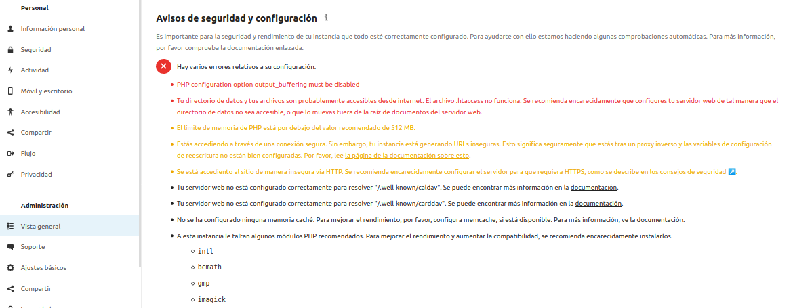

Instalación mínima
Utiliza los siguientes comandos para obtener una instalación mínima funcional de NextCloud
apt update
apt install -y apache2 unzip php mysql-server php-mysql php-zip php-dom php-mbstring php-gd php-curl
wget https://download.nextcloud.com/server/releases/nextcloud-20.0.2.zip
unzip nextcloud-20.0.2.zip -d /var/www/html
chown -R www-data:www-data /var/www/html
mysql -e "CREATE DATABASE nextcloud"
mysql -e "CREATE USER 'admin'@'localhost' IDENTIFIED BY 'admin'"
mysql -e "GRANT ALL PRIVILEGES ON nextcloud.* TO 'admin'@'localhost'; FLUSH PRIVILEGES"
Estos pasos se describen en la sección
Example installation on Ubuntu 20.04 LTS
Cuando termine, navega a http://IP_CONTENEDOR/nextcloud
y finaliza el proceso de instalación.
Configuración del servidor
Una vez instalado, accede como administrador y navega a "Administración" > "Vista general".
En la sección "Avisos de seguridad y configuración" se muestran varios errores relativos a la configuración:

Corrige los siguientes errores:
-
"output_buffering must be disabled" y "Directorio de datos accesibles desde internet"
Para corregirlos sigue la guía
Apache Web server configuration. Presta atención al DocumentRoot que se especifica en la guía y
si es necesario modifícalo convenientemente. Presta atención también al Sistema Operativo que utilizas.
Instala también los modulos de Apache recommendados.
-
"Límite de memoria PHP por debajo de 512MB"
Para corregir este error, deberás cambiar el parámetro de configuración adecuado en el fichero /etc/php/7.4/apache2/php.ini
"faltan módulos de PHP recomendados".
Para resolver este error debes instalar los modulos con apt install
Finalmente la sección "Avisos y seguridad" debe quedar con estos errores:

Además de corregir los errores de seguridad y configuración, también se debe configurar
el servidor para permitir:
Administración de NextCloud
Configuración de NextCloud
- Configura un SMTP server
- Longitud mínima contraseña de 10 caracteres
- Personaliza el tema
Usuarios y grupos
- Crea usuarios
- Usa la opción "Send email to new user", y edita la plantilla del email.
- Concede permisos "Super Administrator / Group Administrator"
- Gestiona grupos
- Establece "Default quotas / user quotas"
- Reestablece el "admin password"
Archivos y directorios
- File access control:
- Bloquea la subida de archivos de mas de 5MB a usuarios que no sean del grupo "premium"
- Crea dos reglas más y justifícalas (piensa en dos supuestos en los que serían útiles estas reglas).
Apps
- Instala, configura y utiliza aplicaciones de las
siguientes categorías:
- Archivos
- Monitorización
- Organización
- Seguridad
Uso de NextCloud
Accede a NextCloud para crear, eliminar y compartir ficheros usando:
- Web interface
- WebDAV
- cURL
- App Desktop/Mobile